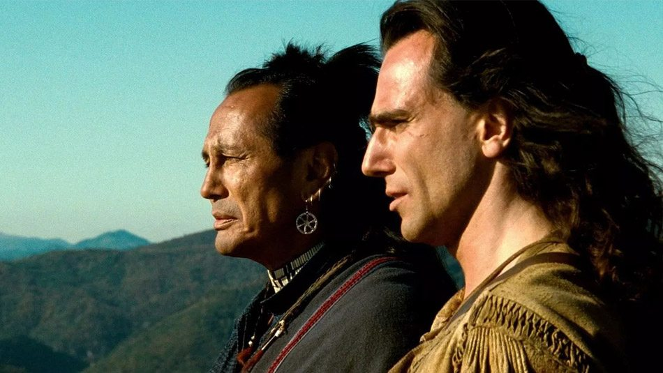
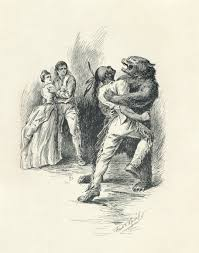

Az utolsó mohikán
Történet
A 18. században játszódik, mikor az angol és a francia gyarmatosítók harcoltak egymással Észak-Amerika birtokaiért, az indián törzsek pedig részben a franciák, részben az angolok mellé álltak. A történet elején Alice és Cora apjukhoz, Munro ezredeshez tartanak, a franciáktól ostromlott William Henry-erődbe, Duncan Heyward őrnagy és David Gamut énekmester kíséretében. Indián vezetőjük, Magua azonban tévútra vezeti őket, mert bosszút akar állni az erőd parancsnokán, Munro ezredesen, akit felelősnek tart saját családja elpusztításáért. Az utazók még időben találkoznak az éppen vadászó Sólyomszemmel, és két indián társával, Unkasszal és Csingacsgukkal. Apa és fia a mohikán törzs két utolsó életben maradt tagja. Segítségükkel sikerül eljutniuk az erődbe, de az erőd feladja a harcot a franciákkal szemben. Az elvonulókat Magua emberei lemészárolják, a bosszúszomjas Magua megöli Munro ezredest is, két lányát pedig fogságba ejti. A történet végén Sólyomszem és társai legyőzik Maguát és megmentik Alice-t és Heyward őrnagyot, de a leszámolásban Corát leszúrják Magua emberei, és párbajban Magua megöli Unkaszt. Apja, Csingacsguk marad „az utolsó mohikán”.
Forrás: wikipedia
Kiadások

Klasszikus magyar kiadás
A Bőrharisnya-sorozat első magyar fordításai a 20. század elején jelentek meg, egyszerű, de részletgazdag kötetekben. A klasszikus kiadás könyvei vastag vászonkötésű borítóval készültek, amelyeken kézzel festett illusztrációk elevenítik meg a vadnyugat világát. Az akkori magyar fordítás kiemelte az író, James Fenimore Cooper romantikus stílusát, és gyakran archaikus nyelvezettel dolgozott. A kötetek olvasmányosak voltak a korabeli közönség számára, de modern szemmel nézve lassú tempójúak lehetnek. Az eredeti öt regény – köztük Az utolsó mohikán és A préri – mind hangsúlyozta a természet szépségét és az indián kultúrák értékeit. A könyvek margóján gyakran voltak lábjegyzetek, hogy segítsék az olvasót a kulturális különbségek megértésében. Ezek a kiadások ma már ritkaságnak számítanak, és gyűjtők körében nagy értéket képviselnek. Az illusztrációk korabeli metszetekből készültek, amelyek hitelesen ábrázolták a szereplők öltözetét és a tájat. A sorozat sikere Magyarországon akkoriban megalapozta a western műfaj népszerűségét.

Gyűjtői kiadás
A Bőrharisnya-sorozat gyűjtői kiadása a könyvrajongók és történelmi regények kedvelőinek igazi kincse. Ezek a kiadások prémium anyagokból készültek, például bőrkötéses borítóval és aranyozott díszítésekkel. A könyvek egyedi számozással érkeznek, korlátozott példányszámban, így minden darab különleges értékkel bír. A kötetek exkluzív tartalmat is kínálnak, például az író, James Fenimore Cooper életéről szóló részletes tanulmányokat, valamint a korabeli amerikai történelem hátterét bemutató esszéket. Az illusztrációk ebben a kiadásban kézzel készült metszetek és festmények alapján készültek, amelyek hitelesen ábrázolják a vadnyugati tájakat és az indián kultúrákat. Az egyes kötetek végén bővített térképek és karakterleírások találhatók, amelyek segítik az olvasót a cselekmény követésében. A gyűjtői kiadásokhoz gyakran társul egy díszdoboz is, amely megóvja a könyveket a sérülésektől és tökéletesen mutat a polcon. A gyűjtők értékelik ezeknek a kiadásoknak az esztétikai és kulturális értékét, valamint azt, hogy egyedülálló módon mutatják be Cooper világát. Ez a változat kiváló választás azok számára, akik szeretnék időtálló formában birtokolni a Bőrharisnya-sorozatot, miközben gyönyörködnek a művészi kidolgozottságban. Az ilyen kiadások gyakran aukciókon is megjelennek, ahol a klasszikus irodalom szerelmesei licitálhatnak rájuk.

Modern, illusztrált kiadás
A modern kiadásokban a Bőrharisnya-sorozat újraéledt, színes illusztrációkkal és korszerű fordításokkal. Az új fordítók célja az volt, hogy az eredeti szöveg lendületét és drámaiságát hűen visszaadják, miközben a mai olvasók számára is érthető nyelvezetet használtak. Az illusztrált kiadások nagy hangsúlyt fektettek a történelmi pontosságra és az autentikus indián kultúrák bemutatására. Minden egyes kötet gazdag, teljes oldalas illusztrációkat tartalmaz, amelyek megidézik a regények cselekményét és hangulatát. A kiadványok minőségi, keménytáblás borítóval és vastag papírral készültek, így ideálisak gyűjtőknek és ajándéknak is. Az új kiadás tartalmaz előszókat és magyarázó jegyzeteket, amelyek segítenek kontextusba helyezni Cooper történeteit. Emellett a könyvek végén térképeket és egyéb vizuális elemeket találhatunk, amelyek a helyszíneket és az eseményeket ábrázolják. Az új illusztrációk gyakran filmes hatásokat idéznek, dinamikus kompozíciókkal és élénk színekkel. Ezek a kiadások nagy népszerűségnek örvendenek, különösen a fiatalabb olvasók körében. A modern változatok révén a Bőrharisnya-sorozat ismét helyet kapott az irodalomkedvelők polcain.
A történet valós elemei
A William Henry-erőd(wd) New York államban, a George-tó(wd) dél végén fekszik. A hétéves háború során, 1755-ben építették, miután a britek csatában elfoglalták a tó déli partvidékét. A franciák ugyanabban az évben, a tó északi végében felépítették a Ticonderoga ellenerődöt. A William Henry-erőd a brit támadások fontos kiinduló bázisává vált. 1757 nyarán Louis-Joseph de Montcalm(wd) márki, kanadai francia főparancsnok vezetésével a franciák ostrom alá vették az erődöt, melyet George Monro(wd) alezredes (1700–1757) védelmezett. A harcban mindkét részről reguláris katonák, polgári milicisták (farmerek) és szövetséges indián csoportok vettek részt. Az erőd egy ideig ellenállt, de miután Daniel Webb(wd) tábornok déli irányból indított felmentő támadása kudarcot vallott, augusztus 10-én Monro szabad elvonulás fejében átadta az erődöt Montcalmnak. A kivonulókat azonban a franciákkal szövetséges indiánok – akikat a kapitulációs szerződés megfosztott áhított zsákmányuktól – megtámadták, kifosztották, mintegy 150–180 embert megölve. Az eseményt a brit propaganda – beleértve James Fenimore Coopert is – később felnagyította, megalkotva a több ezer halottat eredményező „William Henry-mészárlás” legendáját, amelyet az álnok Montcalm rendelt volna el. Valójában a francia tisztek személyes, fegyveres beavatkozása megállította a vérengzést. Augusztus 17-én Monro és katonái, valamint az őket kísérő civilek, asszonyok, gyermekek eljutottak Albanybe. Helytállásáért Monro alezredest előléptetésre és kitüntetésre terjesztették fel, de november 3-án szívrohamban elhunyt. Két fiút és egy leányt hagyott hátra. Cooper a regényében Munro ezredes néven szerepelteti, két leánya, Cora és Alice kitalált személyek. Tamanend(wd) (vagy Tammany, 1625–1700), a Delaware folyó völgyében élő lenni-lenape törzsszövetség – akiket az európaiak delavároknak neveztek – legfőbb főnöke, a bölcsek tanácsának vezetője volt, aki a 17. század második felében több békeszerződést kötött a pennsylvaniai kvéker telepesek képviselőjével, William Pennnel. A Cooper által írt történet idejében, 1757-ben azonban a valóságos „Tamenund” már fél évszázada halott volt. Személye az amerikai őslakos identitás egyik jelképévé vált.
Forrás: wikipedia
Fontosabb szereplők
- Natty Bumppo - Sólyomszem - vadász
- Csingacsguk, mohikán törzsfőnök
- Unkasz, Csingacsguk fia
- Munro alezredes, angol katonatiszt
- Magua, irokéz indián, a ravasz róka
- Cora és Alice Munro, Munro alezredes lányai
- Duncan Heyward, katona
- David Gamut, énektanár